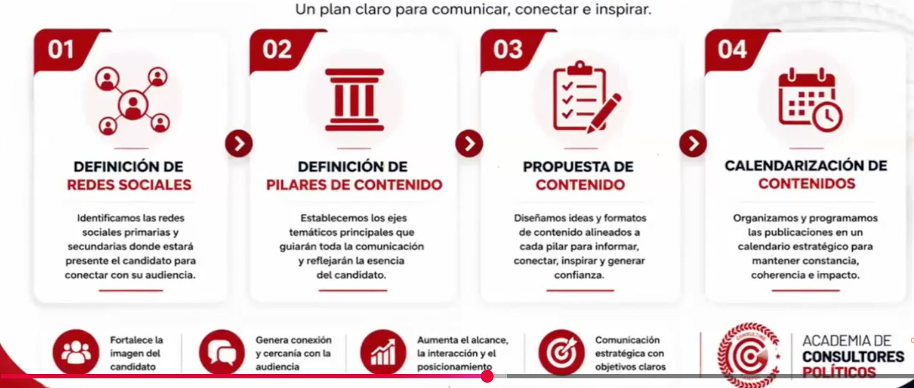
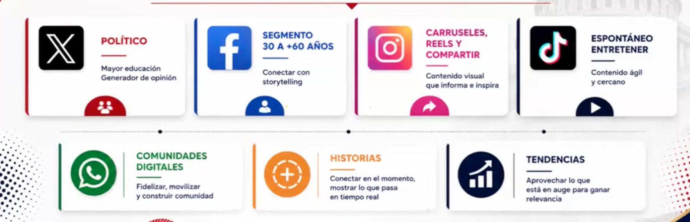
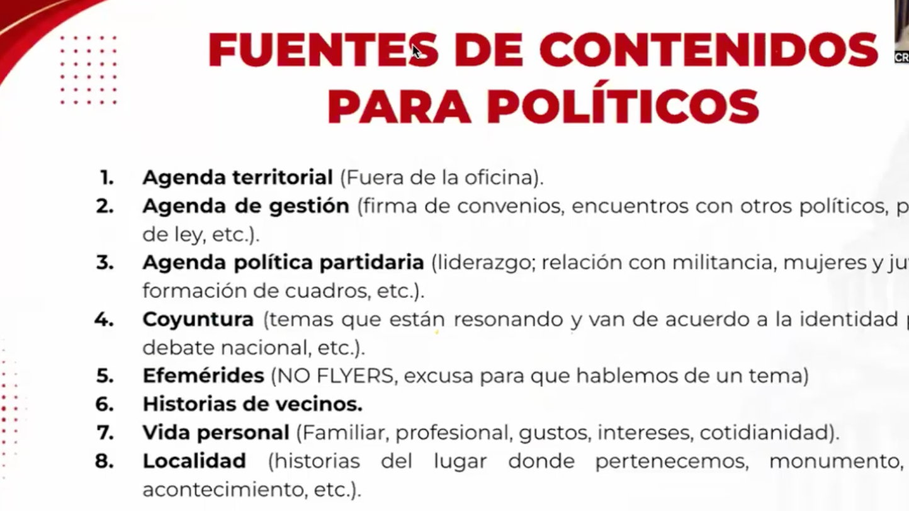
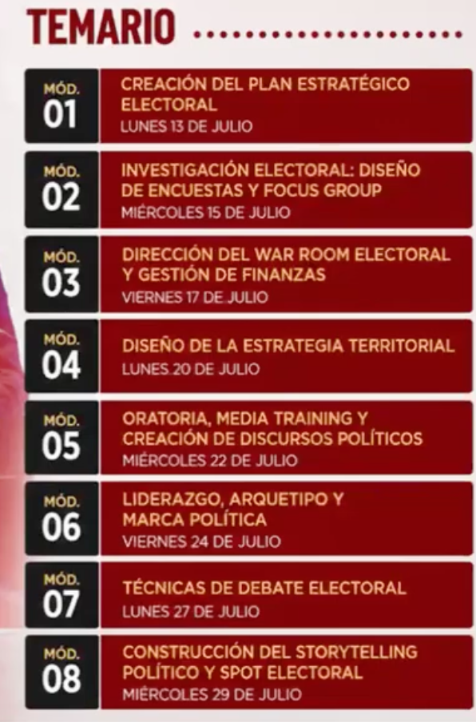
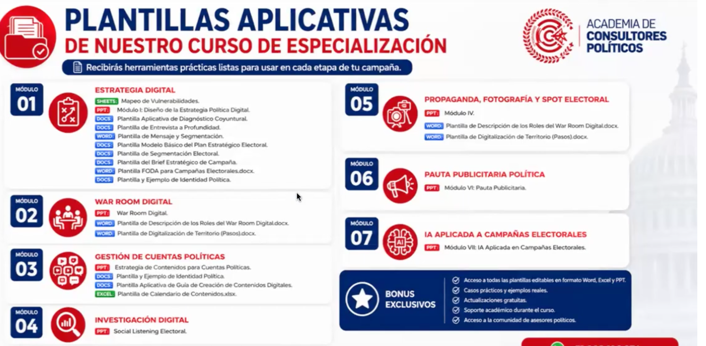
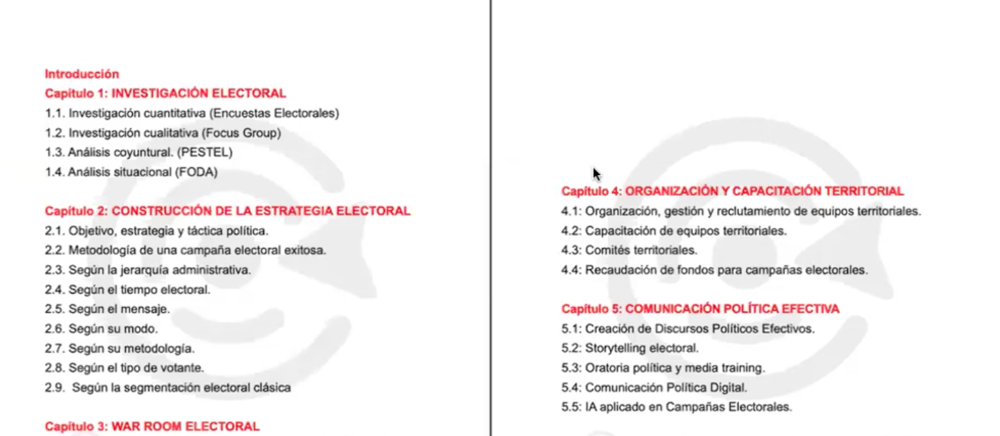

Investigación electoral
El agente de datos convierte encuestas, focus group, FODA y coyuntura en hipótesis verificables.
Mesa cinematica
El flujo separa estrategia de tácticas: primero datos, luego decisión, producción, publicación y control.
El agente de datos convierte encuestas, focus group, FODA y coyuntura en hipótesis verificables.
El jefe de campaña traduce objetivos, segmento, causa política y narrativa en decisiones operables.
El agente territorial conecta mapa, padrones, liderazgos, comités, agenda de calle y señales vecinales.
El agente digital define redes, pilares, formatos, propuesta de contenido y calendario de publicación.
El equipo transforma guiones, piezas, reels, carruseles, pauta y respuestas en lotes listos para revisión.
El tablero cruza avance, interacción, territorio, riesgos, decisiones y próximos movimientos.

Definición de redes, pilares, propuesta y calendario.
Canales, audiencias, historias, comunidades y tendencias.
Fuentes reales de contenido político.
Módulos para estrategia, investigación, War Room, territorio y storytelling.
Plantillas como output, no solo teoría.
Marco de investigación, estrategia, organización y comunicación.Brief estratégico, mapa de segmentos, diagnóstico coyuntural, matriz territorial, calendario editorial, guiones, tablero de pauta y bitácora de decisiones.
La vista enlaza el RAG documental, el mapa territorial y la web pública para convertirlos en piezas de un mismo proceso operativo.